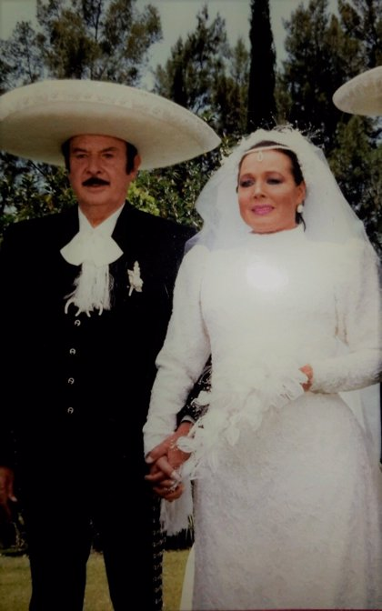
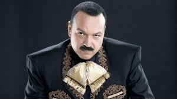
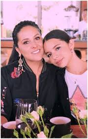

Ángela Aguilar Álvarez es una cantante mexicana de música mariachi nacida en Estados Unidos el 8 de octubre de 2003, mientras su madre acompañaba a su padre, Pepe Aguilar, de gira. Obtuvo un notable reconocimiento después de interpretar "La Llorona". Es nieta de El Charro de México, Antonio Aguilar.
Ella nació en una familia musical, conocida como "La Dinastía Aguilar". Su padre es un reconocido cantante, sus abuelos paternos son los cantantes y actores mexicanos Antonio Aguilar y Flor Silvestre.3 Desde temprana edad, ha acompañado con frecuencia a su padre de gira por América Latina, con su hermano Leonardo Aguilar
Su primer álbum de estudio en solitario, Primero soy mexicana (2018), fue recibido con aclamación crítica y éxito. Ha sido nominada para un Premio Grammy y dos Premios Grammy Latinos, convirtiéndose en una de las artistas más jóvenes nominadas para ambos premios
  A.A.A. —todos los derechos reservados ©